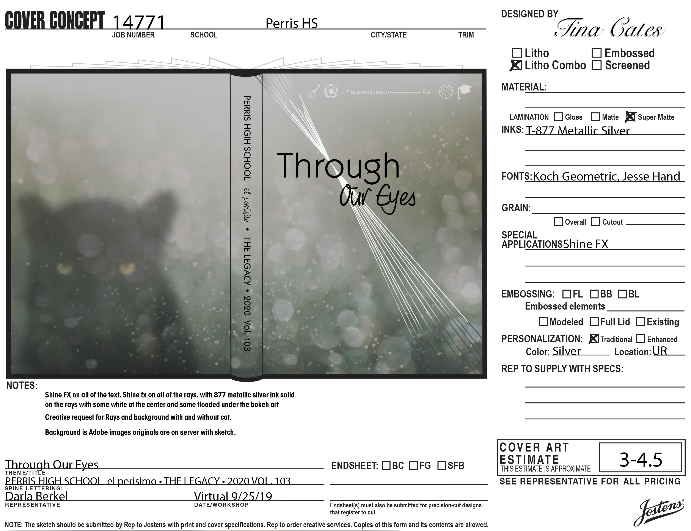
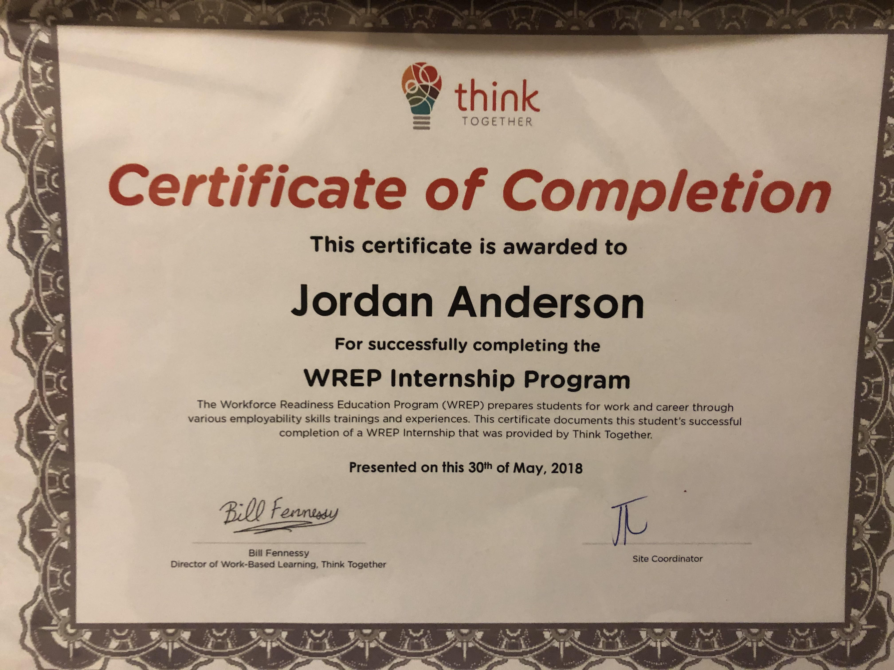
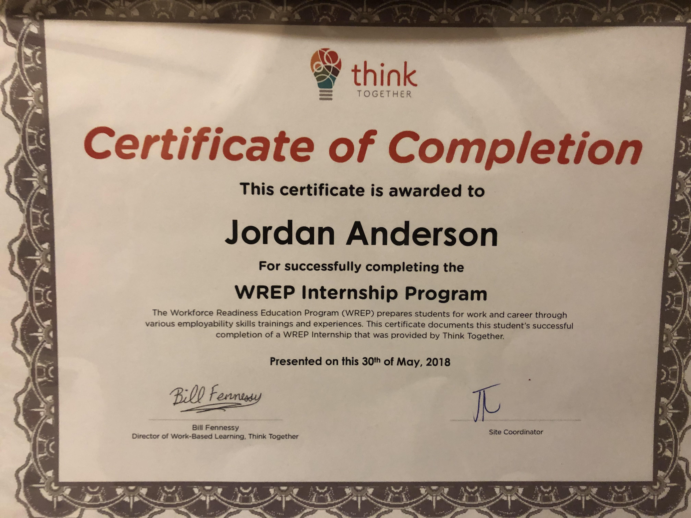

Jordan Anderson
My name is Jordan Anderson. I was born in Riverside county California but due to my father’s service in the military I was moved around a lot. My brother was born in Germany the year before I was born. After that I have lived in Hawaii, Illinois and Georgia. Those places each have their own charms but I do have a certain fondness for California. Since 2017 I haven’t had to move. I don’t regret having to move so much but it has been great since I am going to college and would like to be stable.
I graduated June of 2020 from Perris High School, in California. Previously, I was homeschooled for five years and very nervous about rejoining other students in-person but I was able to adjust and graduated with a 4.0 GPA. In Fall of 2020, I started college at the University of California Riverside to study Business. I'll be deciding my concentration by the end of my second year. After I receive my bachelor's degree I will think about getting higher degrees. If I see it necessary in my career later on it would be my best choice. I hope to work in a marketing position with some emphasis on advertisement and strategies. I became interested in the subject after reading about the psychology and strategies used in stores and their layout. There are many ways stores convince you to buy from them. Whether it’s the lighting, the size of the aisles, colors, scents, prices, etc. I would like to be involved in something like that.
During high school I was involved with the Yearbook and Journalism club for three years. I ranked from photographer, reporter, Vice President, junior editor, to Editor In Chief by my senior year. As Editor In Chief I maintained my school’s $3,000 contract with Jostens to complete a fully written yearbook. I led others to cover events and clubs at the school and taught others how to use the DSLRs. Not only did I write articles but I also designed the exterior and interior layout of the book with the help of my teammates and the representatives of Jostens. During my junior and senior year I interned with Think Together. I performed various tasks with the Older Youth Leaders such as organizing events to advertise after school activities, tutoring English homework in the library, or taking attendance of the students staying after school.
My other interests include photography and drawing and design. During high school I became pretty skilled at using the camera, specifically a Canon T6i. For events, I took informative and composed pictures. The most difficult subjects were the sports games. As anyone can imagine, it's not easy to capture an intense action shot with minimal blurring and decent composition. Capturing the candid expressions of others was my favorite part. That same idea goes for when I’m drawing. I like to capture a face that is deep in thought or calm. Learning to draw different expressions is difficult but I enjoy practicing whenever I can.
Experience
Yearbook Editor-In-Chief
• Experience with publishing
• Journalism and Photography skills
• Use of Adobe Lightroom and Photoshop
Education
UC Riverside
Perris HIgh School
Portfolio



